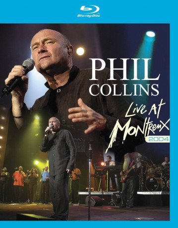

IMDB-Wertung: 7.9 / 10
IMDB-Wertung: 7.9 / 10  Metascore:
Metascore: 
One of music's biggest ever stars, Phil Collins, performs all of his best known hits from his solo career at Montreaux in Switzerland.
 IMDB-Wertung: 7.9 / 10 Metascore:
One of music's biggest ever stars, Phil Collins, performs all of his best known hits from his solo career at Montreaux in Switzerland.
Jahr: 2012
Dauer: 137 Minuten
FSK:
Land: USA Studio: Eagle Rock EntertainmentTonspuren:
Untertitel:
Auflösung: 720p (1276x720) Größe: 6656 MB
Genre: Musik
Regisseur: Julian Nicole-Kay
Drehbuch: Eagle Eye Media
Soundtrack:
Darsteller:
Datei: X:\Musik\Phil Collins Live at Montreux 2004 (2012, FSK, 1276x720).mkv seit 31.07.2017
Festplatte: HD Serien(SU-Z)+Dokus+Musik
 Es gibt insgesamt 134 Filme in der Gruppe 'Musik'
Es gibt insgesamt 134 Filme in der Gruppe 'Musik'